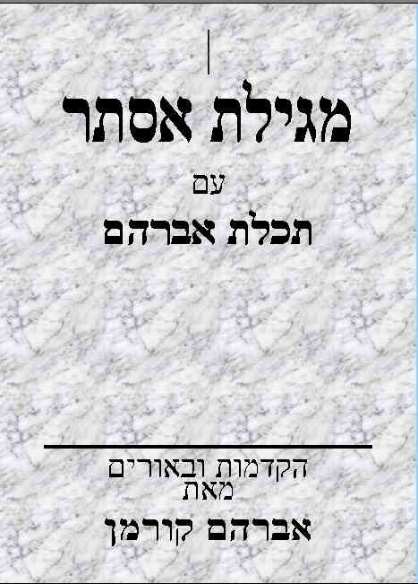

ראשי
>
מגילות
>
אסתר
>
ראשי
>
סופרים בני דורנו
>
הרב אברהם קורמן
>
תכלת אברהם
קוד: תכלת אברהם בתנ"ך
סוג: אוסף
מאת: הרב קורמן
אל: ספר
קנו את הספר
/ עמותת "מקור נובע"
הקדמה
/ עמי כהן
שער
/ עמי כהן
שער חיצוני
שער 1
שער 2
לעילוי נשמת
מבוא
/ הרב קורמן -> ספר
העובדות בסיפורי המגילה ובסגנונה
/ הרב קורמן -> תכלת אברהם
סגנון המגילה לאור ההווי הקדום ...
השלטון בפרס הקדומה
השתיה בפרס
...
נדדה שנת המלך
והשתיה כדת
שושן - שושן הבירה
כל המיצר לישראל נעשה ראש
דבר המלך ודתו
אי הזכרת שם ה' במגילה
ומרדכי לא ישתחווה
אסתר קרקע עולם
ופני המן חפו
פתשגן = העותק הגלוי של מסמך רש...
חגיגת פורים - בנפול אויבך אל ת...
הדור קיבלוה בימי אחשורוש
זיהוי גיבורי המגילה
/ הרב קורמן -> תכלת אברהם
כללי
זיהוי ושתי ואסתר
מניין השטרות
...
חישוב תאריכים של מאורעות הסטור...
אחשוורוש - חכם טיפש או הפכפך
שמותיהם הלועזיים של מרדכי ואסתר
פורים וחנוכה
/ הרב קורמן -> תכלת אברהם
מנהגי פורים
/ הרב קורמן -> תכלת אברהם
כללי
תענית אסתר (מאמר)
מנהג התחפושות בפורים
...
מסכת פורים
מנהגי משחקים וליצנות בפורים
רעשנים בפורים
מגילת אסתר בימי השואה
כל הספר באריזה אחת (.zip)
"חידושי המחבר על מגילת אסתר הינם פנינים של ממש, שכל המעיין בהם, תוהה אם אי פעם הבין את מהלך האירועים במגילה, כפי שבאה לידי ביטוי בסגנונה" [מתוך ההקדמה לספר]

תכלת אברהם - מפתח (.doc)
אוסף מאמרי ר' אברהם קורמן ז"ל